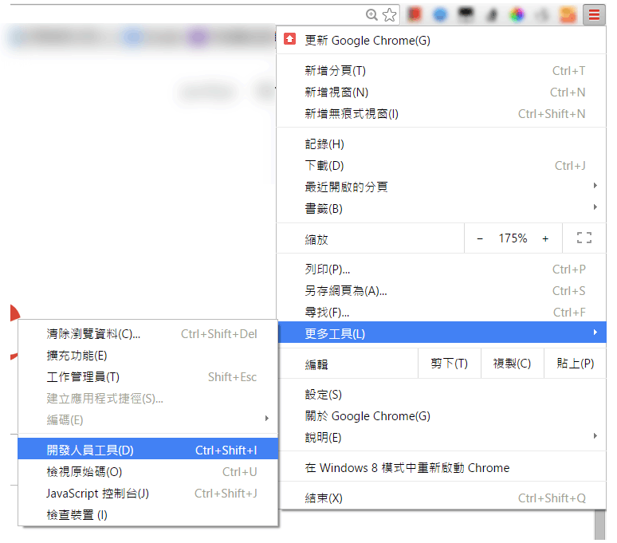
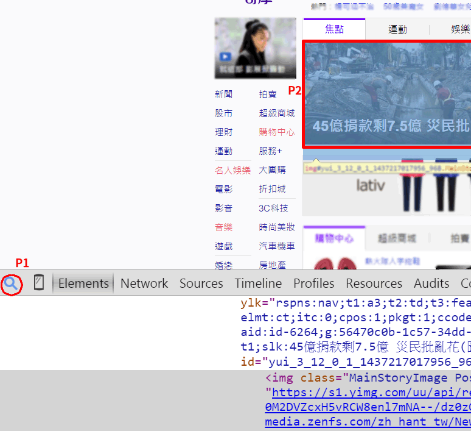

有些網站好的不學，專學那種鎖右鍵，防盜圖等等影響使用者操作的行為，造成正常使用者瀏覽的困擾，下面講解一些破解方式與原理，鎖右鍵不但防不了有心人的，又會使得網頁難以操作，也在此呼籲網頁的開發者，不要在使用這種影響使用者操作的設計，一個優良的網站，應該要盡量替使用者著想，而不是處處阻擋使用者，把使用者當成壞人。
鎖右鍵破解
一般網頁鎖右鍵的方式，會用這種語法，＜body oncontextmenu="return false">。
1. 利用 Javascript 功能破解
使用 IE 瀏覽器 並在網址列輸入下列內容，並按 enter，這句語法會使用網頁變成可編輯狀態，即然是可編輯，當然文字也可以圈選，複製。
- javascript:document.body.contentEditable='true'; document.designMode='on';
- document.body.oncontextmenu="return true;";void(0)
所有的網頁內容都會變成可選取並可拖拉，當然右鍵也被解鎖了
! 要特別注意，如果你是使用瀏覽器 Chrome 的話，它預設會阻擋 javascript: 開頭的字串，如果你是用複製，貼上這串語法，最前面的 javascript 這幾個字會不見，必須再手動輸入 javascript: 到 URL 的開頭，Chrome 是為了安全性考量才會做這個阻擋機制，不過我們要用的語法並不含任何攻擊程式。
2. 打開瀏覽器的 Console ，輸入以下列指令，也可以做到相同的事。
- document.body.contentEditable='true'; document.designMode='on';
- document.body.oncontextmenu="return true;"
3. 利用瀏覽器本身的設定
使用 FireFox 瀏覽器，在工具->選項->內容->進階->取消 停用或取代右鍵選單，按確定就ok囉
以上三個方式，你可以選擇任何一種來破解鎖右鍵。
破解無法選取文字，無法複製文字
1. 讀取網頁原始碼
- FireFox 按檢視->頁面原始碼-> 按 ctrl+f 搜尋目標文字
- IE 按檢視->原始檔-> 按 ctrl+f 搜尋目標文字
2. 利用瀏覽器的工程師開發工具
FireFox: 安裝 plugin 的 firebug，打開 firebug 尋找目標文字
IE8 破解方式
- 按工具->開發者工具 ，或是按 F12
- 點一下工具中的滑鼠游標
- 點選了上圖的游標後，再去點一下要複製的文字區塊
- 回到開發者工具，將目標文字的圖層打開，這樣就可以從開發者工具中選取並複製文字。
破解圖片無法另存
1. Firefox 工具抓圖片
使用 Firefox 瀏覽器，打開 工具->頁面資訊->媒體 ，在裡面找到你要的圖，然後另存新檔即可。
2. 利用暫存檔來取得圖片
打開原始碼：搜尋 img 、 jpg 、 gif 等字元，找出你要的圖，複製連結並貼上網址，不用擔心伺服器會鎖盜連，只要你事先看過這個頁面，瀏覽器就會自動存檔，所以看到的圖片是暫存檔。
同上的原理，你也可以從網頁暫存檔的資料夾去尋找你看過的圖片 ， 你可以參考這個網址 就能找到網頁暫存的資料夾。
3. 微軟工具，小畫家超好用的抓圖功能
按鍵盤右上角的 print screen 印列螢幕功能，再打開小畫家，按 ctrl + v 貼上，最後將你要的部分裁切下來就行了，小畫家是一個 windows 內建小型的軟體，執行速度超快，非常方便。
4. 利用瀏覽器 Chrome 的開發人員工具來下載圖片
請先打開你的 chrome 瀏覽器，然後連上某個想抓圖的網址，再來打開 "開發人員工具"，如下圖所示。
接著瀏覽器下方會自動打開一個小視窗，先點擊左邊一個搜尋的小按鈕 (P1)，然後再去點擊你想下載的圖片 (P2)，如下圖。
完成後就會在下面那個視窗看到圖片的路徑，例如範例中的路徑如下
https://s1.yimg.com/uu/api/rxxxxxx
對這個路徑按右鍵->另開新視窗，就能成功下載那張圖片囉。
破解 Google Docs 鎖複製
先把整個頁面另存新檔，修改新檔刪除這個語法：user-select: none; ，可以使用全部取代變成空白，再打開修改過的 html 檔案即可以選取文字並複製。